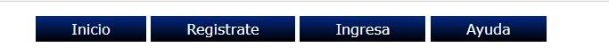
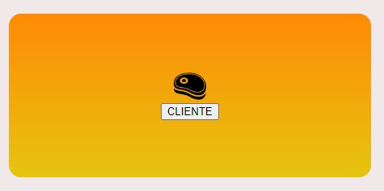

CoyoRappi es una aplicación web que busca facilitar la forma en la que se pide y recibe comida de la CoyoCafetería de Prepa6. El estar inscrito en la Preparatoria de Tony Case te permite ocupar este servicio, alumno, profesor, trabajador o funcionario, lo único que tienes que hacer es registrarte y esperar por la comida y claro...¡no olvides pagar!
Lo primero que tienes que hacer es dar clic en la pestaña "Registrarse" de la barra de navegación en la parte superior, esta te redireccionará a una pantalla donde tendrás que elegir qué tipo de usuario eres para posteriormente ingresar los datos que se te indican.
Una vez registrado, volverás a la página principal, si quieres hacer tu primer pedido todo lo que tienes que hacer es ingresar con tu usuario y contraseña, para hacer esto puedes hacerlo por la pestaña a un lado de "Registrarse" titulada "Ingresar" o puedes optar por ocupar el ícono que lleva un bistec de la pagina de inicio.
Si ingresaste tus datos correctamente, llegarás a una página donde se te presentarán las opciones disponibles en el menú y un formulario donde podrás ingresar qué deseas pedir y en qué cantidad.
Ingrese imagen de menúA su vez, para hacer más eficiente el servicio y porque sabemos que no siempre puedes salir por comida, CoyorRappi cuenta con dos opciones de entrega:
Tras esto, su pedido será procesado y le calculará el total, en esta ventana finalmente usted tendrá que decidir si realizar el pedido o cancelar la orden.
Inserte imagen de total y pedirSi decide ordenar, se le dará un tiempo de entrega aproximado, en caso de haber pedido recogerlo también se le dará un tiempo que de sobrepasar se amonestará con 5 días sin poder ordenar comida, haga buen uso del servicio por favor.
Si alguna vez olvida su contraseña, podrá avisarle al administrador para que le brinde una nueva.
Esperamos disfrute el servicio y PROVECHO!